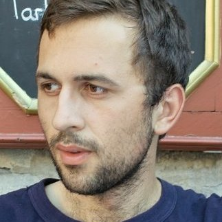

DAVIS: Data-efficient learning of foundation audio-visual models
Sight and sound are two of the most important sensory inputs, enabling applications such as video summarization, multimodal emotion recognition, and documentation of low-resourced languages. The rise of video media has made it more suitable than ever to train machine learning models on the audio and visual input modalities. Such models—trained on large amounts of unlabelled data and which can also be successfully be transferred to multiple tasks—are known as foundation models. However, the main limitation in training foundation models is the scale of both the data and the architecture, which has implications for hardware costs, research progress and environment. This project aims to significantly reduce the cost of training foundation audio-visual models by taking a data-centric approach. Our approach will involve selecting subsets of the video data that are well aligned (also known as visually grounded speech) and removing redundancy in each of the two channels (visual stream and audio stream). Additionally, to facilitate training, we will seek to improve both training and data efficiency by following the recent best practices developed in the context of more general image or language models. Our project will enable the next generation of audio-visual models and their resulting applications to be accessible to both academics and smaller organizations.
-
This project is supported by the Romanian National Authority for Scientific Research and
Innovation,
UEFISCDI:
Project number: PN-IV-P2-2.1-TE-2023-1632
Contract number: 138TE / 2025
Period: 2025-08-01 – 2027-07-31
Research fields: machine learning, statistical data processing and applications using signal processing (e.g., speech, image, video)
Objectives
The overarching goal of the project is to build a foundation audio-visual model in an efficient manner. To reach this goal, we set five objectives:- O1 · Quantify the impact of misaligned data in audio-visual learning.
- O2 · Design and implement methods to estimate the alignment of audio-visual data.
- O3 · Design and implement filtering methods based on either the audio or visual channels.
- O4 · Design, implement and train efficient audio-visual models.
- O5 · Evaluate the effect of well-aligned data on downstream tasks.
Deliverables
- D1.1 · Summary of the state of the art, available datasets, and findings regarding the existing models.
- D2.1 · Description of the filtering techniques.
- D2.2 · Filtered dataset.
- D3.1 · Description of the model design and its training.
- D3.2 · Source code of the implementation (model and training scripts).
- D3.3 · Pre-trained models (on the baseline dataset and on the filtered dataset).
- D4.1 · Evaluation performance on the downstream tasks.
Reports
Below are the activity reports for the three stages of the project (2025, 2026, 2027), describing the seven deliverables; all reports are written in Romanian:2025/D1.1 (partial) · report new2026/D1.1 (final), D2.1, D2.2, D3.12027/D3.2, D3.3, D4.1
Publications
- L. Nortje, D. Oneață, G. Pîrlogeanu, and H. Kamper. Improved Visually Prompted Keyword Localisation in Real Low-Resource Settings. In 13th Conference on Speech Technology and Human-Computer Dialogue (SpeD), 2025.
Team
